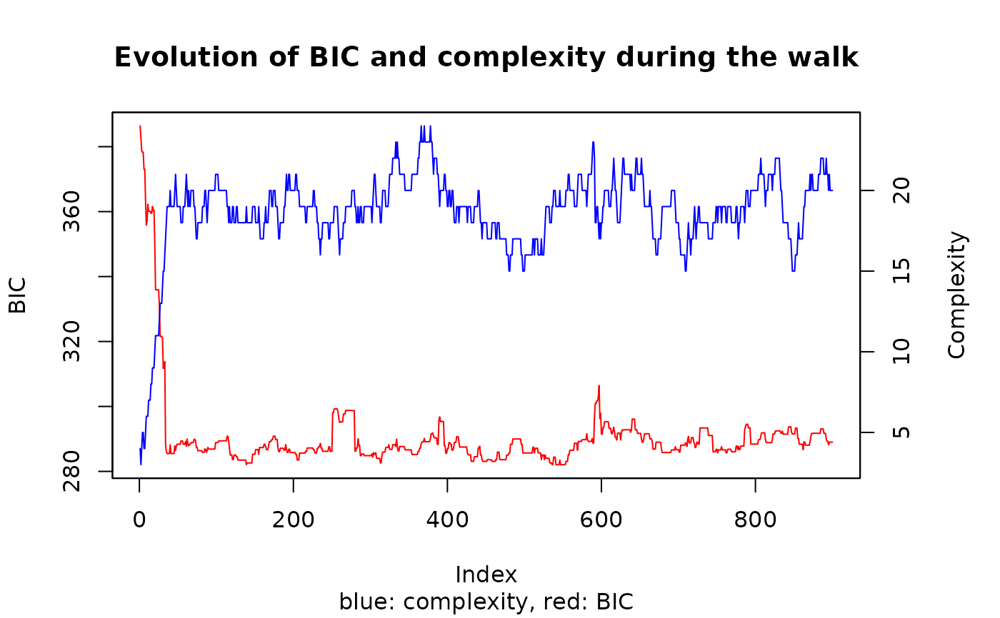

R/structureFinder.R
structureFinder.RdThis function computes a random walk based on a full generative model on the dataset. We optimize a BIC-like criterion to find a model of sub-regressions within the covariates. If marginal density are unknown, Gaussian Mixture models are used automatically. We obtain the best structure as an adjacency matrix (binary squared matrix) that corresponds to the Directed Acyclic Graph of dependencies within the covariates.
structureFinder( X = X, Z = NULL, Bic_null_vect = NULL, candidates = -1, reject = 0, methode = 1, p1max = 5, p2max = NULL, Maxiter = 1, plot = FALSE, best = TRUE, better = FALSE, random = TRUE, verbose = 1, nb_opt_max = NULL, exact = TRUE, nbini = NULL, star = TRUE, clean = TRUE, ... )
| X | the matrix of the dataset containing p correlated covariates (with n individuals) |
|---|---|
| Z | (optional) initial structure. Binary adjacency matrix of size p. if NULL zero matrix is used |
| Bic_null_vect | p-sized vector of the BIC values of the null hypothesis (used for independent variables). If NULL then it would be computed based on Gausian Mitures hypothesis. |
| candidates | strategy to define a neighourhood (list of candidates). Each new candidate is a modification of the current model as an adjacency matrix. So candidates are defined by the position that will be modified in Z. One modification for each candidate. We have then several neighbourhood to propose. 0:row and column (randomly chosen),-1:column only (randomly chosen), int>0:random int candidates at each step, -2: all (but the diagonal) so |
| reject | 0: constraint relaxation (if a candidate is not feasible then we modify it to make it feasible by deleting not compatible links), 1: reject mode (if a candidate is not feasible, we don't look at it). |
| methode | parameter for OLS (matrix inversion in Ordinary Least Squares) 1:householderQr, 2:colPivHouseholderQr |
| p1max | maximum complexity (number of explaining covariates) for a sub-regression (positive integer) |
| p2max | maximum number of sub-regressions (positive integer) |
| Maxiter | number of steps (positive integer) |
| plot | (boolean) TRUE: returns for each step the type of move, complexity and BIC. If nbini>1 then it returns the values associated to the chain that found the best BIC. |
| best | (boolean) TRUE: systematically jumps to the best BIC seen ever when seen (it is stored even if best=FALSE) |
| better | (boolean) TRUE: systematically jumps to the best candidate if better than stationarity (random jump weighted by the BIC otherwise) |
| random | (boolean) if FALSE:moves only to improve and only to the best. Otherwise random jump weighted by the BIC if no deterministic jump due to parameters |
| verbose | level of printed informations during the walk. 0:none, 1:BIC,step and complexity when best BIC found 2:BIC, step, complexity, nb candidates and best candidate when best BIC found. |
| nb_opt_max | stop criterion defining how many times the chain can walk (or stay) on the max found |
| exact | (boolean) If exact sub-regression is found it gives its content (another verbose mode). One of the covariates can then be deleted manually by the user without loss of information. |
| nbini | Number of initialisations (using initialisation based on correlation matrix if Z is NULL). if NULL and Z is NULL: only one chain starting with zero matrix (model without any sub-regression) |
| star | (boolean) to compute BIC* instead of BIC (stronger penalization of the complexity based on a hierarchical uniform hypothesis on the probability of each structure). WARNING: star=TRUE implies p2max<=p/2. |
| clean | (boolean) if TRUE then we add cleaning steps at the end of the walk (testing each remainging 1 for removal). So it is only few additional steps with |
| ... | optional parameters to be passed (for initialization). |
a list that contains:
The local structure of the last step (adjacency matrix)
The best structure seen during the walk in terms of the BIC-like criterion.
Value of the global BIC-like criterion associated to Z_opt
The index of the step where Z_opt was found
p-sized vector of the BIC values associated to the model without sub-regressions. For use in a later search.
if plot=TRUE, vector of the BIC at each step
if plot=TRUE, vector of the complexities at each step (=sum(Z))
if plot=TRUE, vector of the type of modification at each step. 0:delete, 1: add, 2: stationarity
At each step we compare several candidates that are the local structure modified at one place (one coefficient of the adjacency matrix). Knowing the local structure a candidate is then just defined by the index of the position we modify in this local structure. So strategies are just choices of list of indices.
To avoid local extrema we allow constraints relaxation. If a modification is not feasible (it generates cycles for example) then the candidate is not rejected but modified. In fact, if we want to modify Z[i,j] then we modify Z at each position that makes the modification of Z[i,j] not feasible. It is like allowing several steps in one, a kind of simulated anhealing but without parameter to tune.
# dataset generation base = mixture_generator(n = 15, p = 10, ratio = 0.4, tp1 = 1, tp2 = 1, tp3 = 1, positive = 0.5, R2Y = 0.8, R2 = 0.9, scale = TRUE, max_compl = 3, lambda = 1) X_appr = base$X_appr # learning sample Y_appr = base$Y_appr # response variable for the learning sample Y_test = base$Y_test # responsee variable for the validation sample X_test = base$X_test # validation sample TrueZ = base$Z # True generative structure (binary adjacency matrix) # density estimation for the MCMC (with Gaussian Mixtures) density = density_estimation(X = X_appr, nbclustmax = 10, detailed = TRUE) Bic_null_vect = density$BIC_vect # vector of the BIC found (1 value per covariate) # MCMC to find the structure res = structureFinder(X = X_appr, verbose = 0, reject = 0, Maxiter = 900, plot = TRUE, nbini = 20, candidates = -1, Bic_null_vect = Bic_null_vect, star = TRUE, p1max = 15, clean = TRUE) hatZ = res$Z_opt # found structure (adjacency matrix) hatBic = res$bic_opt # associated BIC # looking inside the walk old_par<-par() par(mar = c(5, 4, 4, 5)+.1) plot(res$bic_step, type = "l", col = "red", ylab = "BIC", sub = "blue: complexity, red: BIC", main = "Evolution of BIC and complexity during the walk")par(new = TRUE) plot(res$complexity_step, type = "l", col = "blue", xaxt = "n", yaxt = "n", xlab = "", ylab = "")axis(4)# legend("topleft", col = c("red", "blue"), lty = 1, legend = c("BIC", "Complexity")) # BIC comparison between true and found structure bicopt_vect = BicZ(X = X_appr, Z = hatZ, Bic_null_vect = Bic_null_vect) bicopt_vrai = BicZ(X = X_appr, Z = TrueZ, Bic_null_vect = Bic_null_vect) sum(bicopt_vect)#> [1] 260.6646sum(bicopt_vrai)#> [1] 283.5545# Structure comparison compZ = compare_struct(trueZ = TrueZ, Zalgo = hatZ) # qualitative comparison # interpretation of found and true structure ordered by increasing R2 # <NA>line: name of subregressed covariate readZ(Z = hatZ, crit = "R2", X = X_appr, output = "all", order = 1)#> [[1]] #> coefs var #> 1 0.609344847971411 R2 #> 2 <NA> 1 #> 3 0.179427930215714 intercept #> 4 0.598976688120658 6 #> 5 0.38206100424789 8 #> #> [[2]] #> coefs var #> 1 0.83469083540059 R2 #> 2 <NA> 2 #> 3 0.901088655694866 intercept #> 4 0.318324623638708 4 #> 5 -0.406701412405925 5 #> 6 0.194918916799436 8 #> #> [[3]] #> coefs var #> 1 0.867027930257127 R2 #> 2 <NA> 7 #> 3 0.817691426849189 intercept #> 4 0.371103740325503 3 #> 5 0.20760179689436 4 #> 6 -0.38413140632306 6 #> 7 0.113336020459217 8 #> #> [[4]] #> coefs var #> 1 0.922814674741659 R2 #> 2 <NA> 10 #> 3 0.82527307698085 intercept #> 4 0.266926923318659 3 #> 5 -0.101314023711549 4 #> 6 0.0495941278722934 5 #> 7 0.263130035891266 6 #> 8 0.262800622597805 8 #> #> [[5]] #> coefs var #> 1 0.959034859855041 R2 #> 2 <NA> 9 #> 3 -0.846504974186838 intercept #> 4 0.0583065635179012 3 #> 5 0.461289745697967 4 #> 6 -0.068699178740286 5 #> 7 0.318491463347631 6 #> 8 -0.309718668098592 8 #>#> [[1]] #> coefs var #> 1 0.730596543850315 R2 #> 2 <NA> 7 #> 3 0.801955648271956 intercept #> 4 0.358583130093284 3 #> 5 0.15397613402692 5 #> 6 -0.432770805967613 6 #> #> [[2]] #> coefs var #> 1 0.83469083540059 R2 #> 2 <NA> 2 #> 3 0.901088655694866 intercept #> 4 0.318324623638708 4 #> 5 -0.406701412405925 5 #> 6 0.194918916799436 8 #> #> [[3]] #> coefs var #> 1 0.882844454138085 R2 #> 2 <NA> 10 #> 3 0.817359180902454 intercept #> 4 0.253731797328586 3 #> 5 0.279934817230542 6 #> 6 0.260936836467484 8 #> #> [[4]] #> coefs var #> 1 0.951556112213991 R2 #> 2 <NA> 9 #> 3 -0.860993767300636 intercept #> 4 0.44323048261184 4 #> 5 0.319945972379733 6 #> 6 -0.34220693812877 8 #>par(old_par)#> Warning: graphical parameter "cin" cannot be set#> Warning: graphical parameter "cra" cannot be set#> Warning: graphical parameter "csi" cannot be set#> Warning: graphical parameter "cxy" cannot be set#> Warning: graphical parameter "din" cannot be set#> Warning: graphical parameter "page" cannot be set